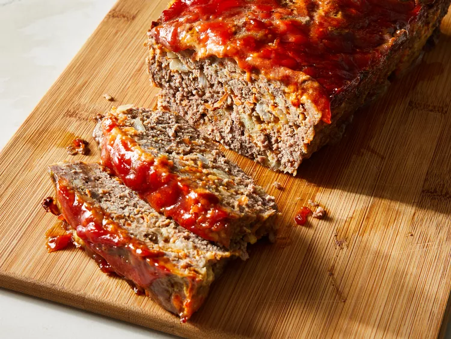

Meat Loaf

Description:
What's better than a hearty meatloaf? This is a recipe that's easy
and foolproof. No bells and whistles - just a few ingredients
including beef, egg, bread crumbs and a simple tomato-based topping.
Ingredients:
- 1 - 1/2 pounds Ground Beef (93% lean or leaner)
- 3/4 cup panko bread crumbs
- 3/4 cup ketchup, divided
- 1/2 cup minced onion
- 1 egg
- 1 tablespoon Worcestershire sauce
- 2 teaspoons minced garlic
- 1 teaspoon dried thyme
- 3/4 teaspoon pepper
- 1/2 teaspoon salt
Steps:
-
Preheat oven to 350°F. Combine Ground Beef, bread crumbs, 1/2
cup ketchup, onion, egg, Worcestershire, garlic, thyme, pepper
and salt in large bowl, mixing lightly but thoroughly. Shape
beef into 8 x 4-inch loaf on rack in aluminum foil-lined broiler
pan.
-
Place on upper oven rack in 350°F oven. Bake 45 to 55 minutes,
until instant-read thermometer inserted into center registers
160°F; brush with remaining 1/4 cup ketchup during last 10
minutes, if desired. Let stand 10 minutes. Cut into slices.
Homepage